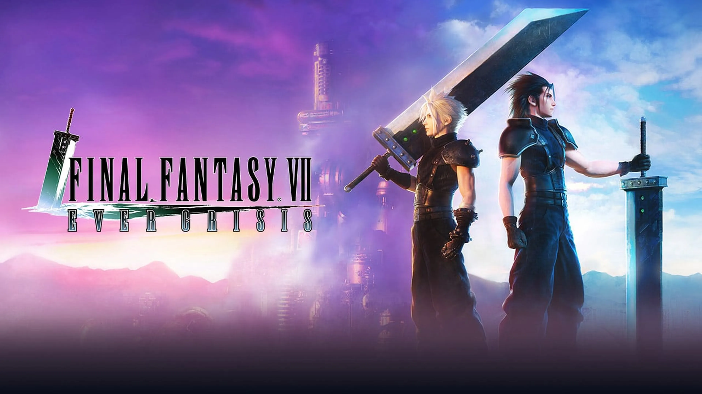
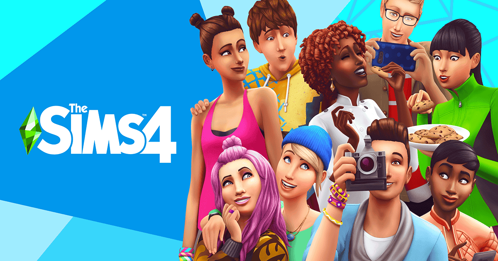
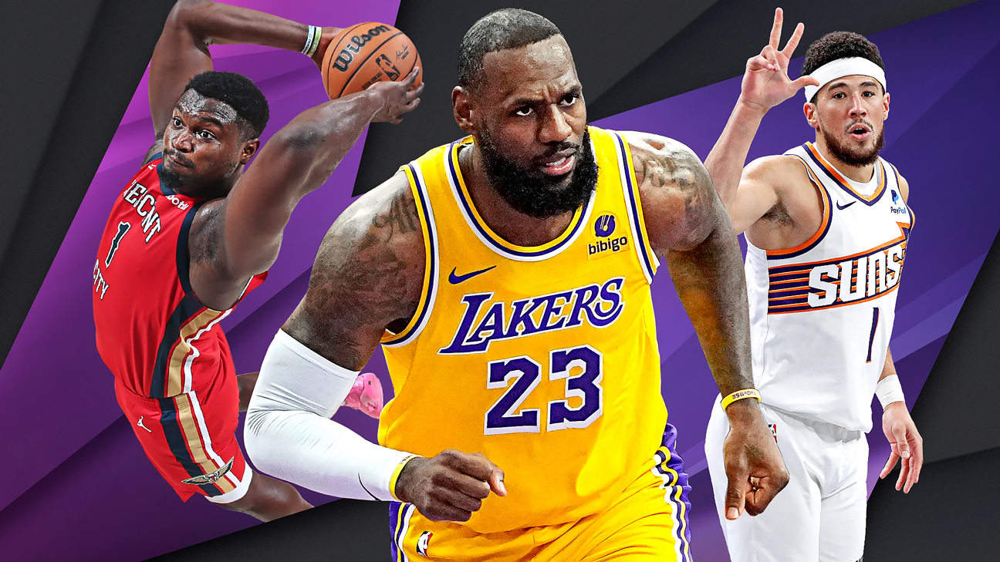

Gèneres de Videojocs
Acció
Aquest gènere posa èmfasi en les reaccions ràpides i els reflexos del jugador. Sol incloure combat, persecucions i altres situacions d'alta intensitat. Exemples de jocs d'acció són Call of Duty, Halo i Assassin's Creed.

Aventura
El gènere d'aventura sol incloure exploració, resolució de puzles i una trama immersiva. El jugador pot viure emocionants històries i descobrir nous mons. Exemples de jocs d'aventura són The Legend of Zelda, Uncharted i Tomb Raider.

Plataformes
Els jocs de plataformes posen èmfasi en la navegació d'un personatge a través de nivells en els quals ha de saltar entre plataformes i evitar obstacles. Exemples de jocs de plataformes són Super Mario, Sonic the Hedgehog i Celeste.

Trets
En aquest gènere, l'enfocament principal és disparar als enemics. Sol incloure armes de foc i altres elements relacionats amb la guerra. Exemples de jocs de disparos són Call of Duty, Counter-Strike i Overwatch.

Estratègia
El gènere d'estratègia requereix pensament tàctic i presa de decisions. El jugador sol gestionar recursos i planificar estratègies per aconseguir la victòria. Exemples de jocs d'estratègia són Starcraft, Civilization i Age of Empires.

Rol
En aquest gènere, el jugador interpreta el paper d'un personatge i viu una història. Sol incloure elements de personalització del personatge i progressió en un món fictici. Exemples de jocs de rol són Final Fantasy, The Elder Scrolls i World of Warcraft.
Simulació
El gènere de simulació intenta simular aspectes de la vida real. El jugador pot gestionar ciutats, construir parcs d'atraccions o pilotar vehicles en entorns realistes. Exemples de jocs de simulació són The Sims, SimCity i Microsoft Flight Simulator.
Esports
Els jocs d'esports estan basats en esdeveniments esportius reals o ficticis. El jugador pot competir en diferents disciplines esportives com el futbol, el bàsquet o les carreres de cotxes. Exemples de jocs d'esports són FIFA, NBA 2K i Rocket League.
Puzzle
El gènere de puzles requereix resoldre puzles o enigmes mitjançant la lògica i el pensament crític. El jugador pot trobar-se en situacions que posen a prova la seva capacitat de resolució de problemes. Exemples de jocs de puzles són Tetris, Portal i The Witness.

Horror
Els jocs d'horror estan dissenyats per crear por i angoixa al jugador. Sol incloure elements de terror, supervivència i misteri. Exemples de jocs d'horror són Resident Evil, Silent Hill i Outlast.